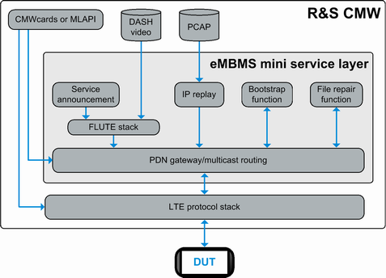

Using the eMBMS Service
The DAU option R&S CMW-KAA30 enables a mini service layer for eMBMS (evolved multimedia broadcast multicast service). The multicast option R&S CMW-KA150 is also required.
The mini service layer of the DAU provides all eMBMS services required for eMBMS tests. It supports, for example, the following features:
- Unicast services:
– Bootstrap function – Associated delivery procedures, for example file repair function and reception reports - Multicast services
– Service announcement over the FLUTE protocol – File download and video streaming over the FLUTE protocol – Replay of PCAP files, that is replay of pre-recorded eMBMS multicast content
The IP replay application of the DAU is required (included in option R&S CMW-KM050).
The eMBMS mini service layer does not provide a graphical user interface. It cannot be configured directly via the DAU software.
Instead, it is configured and controlled comfortably via CMWcards or via protocol test applications. Even the IP replay application is controlled in that way for eMBMS tests. You do not need to configure it via the DAU software.
The following figure provides a graphical overview.

eMBMS service layer overview